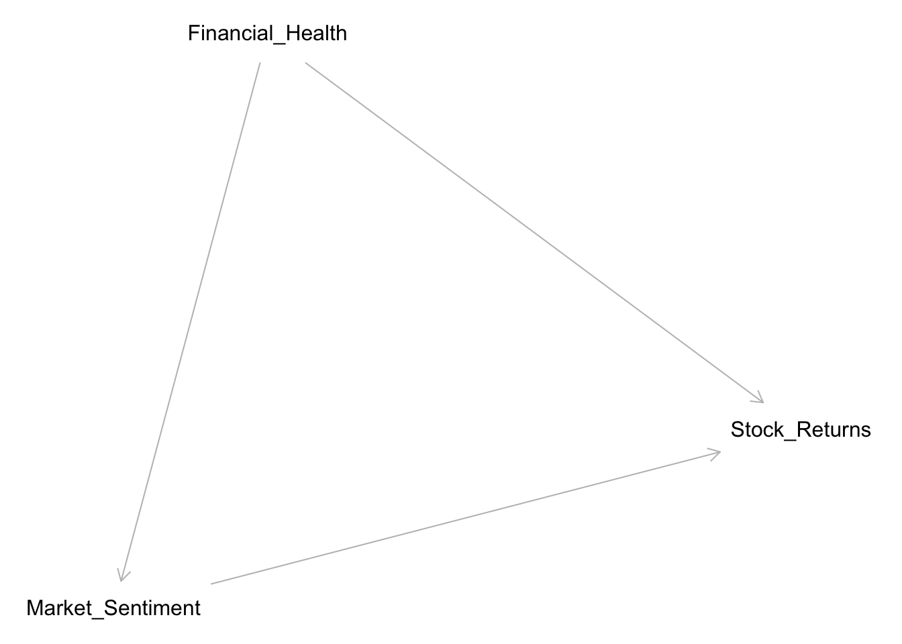

[](images/DALL·E 2024-01-29 16.56.33 - A humorous and illustrative image depicting the concept of “causal salad” in linear regression modeling. The scene is set in a chaotic kitchen, where .png)
10.1 Perils of Causal Salad in Econometric Analysis
In the realm of econometric analysis, a prevalent pitfall is the creation of what can be colloquially termed a “causal salad.” This term refers to the misguided practice of indiscriminately adding more predictors to a model, often without adequate theoretical justification or understanding of the underlying causal relationships. This approach can lead to models that are overfitted, misinterpreted, and ultimately misleading.
A common manifestation of this issue is the practice of blindly incorporating a variety of predictors into a model and then presenting these additions as some form of robustness test. While robustness checks are essential in econometrics to ensure that results are not an artifact of specific model specifications, the unprincipled expansion of the model with additional predictors can do more harm than good. It often leads to false confidence in the model’s findings and obscures the true relationships between variables.
This indiscriminate approach ignores the crucial need for a model to be grounded in a solid theoretical framework. Without a clear understanding of the potential causal pathways and the role of each variable, adding more predictors can introduce biases, such as endogeneity and collider bias, rather than alleviate them. These biases can significantly distort the estimates and lead to erroneous conclusions, particularly in complex fields like finance where the stakes are high.
In this chapter, we will explore the concepts of endogeneity and collider bias in depth, demonstrating how they arise and their implications in econometric models. We will particularly focus on real-world finance examples to illustrate these concepts and discuss strategies to avoid the pitfalls of causal salad through careful model specification and robustness testing.
10.2 Introduction to Endogeneity
Endogeneity is a crucial concept in econometrics, referring to situations where an explanatory variable is correlated with the error term. This correlation can stem from omitted variables, measurement errors, or simultaneity issues in the model. Endogeneity leads to biased and inconsistent estimates, making it challenging to deduce the true effects of explanatory variables on the dependent variable. Endogeneity, a critical issue in econometric analysis, can manifest in several main ways, significantly affecting the validity and interpretation of regression results. Understanding these manifestations is crucial for choosing appropriate methods to address them. Here are the primary forms of endogeneity:
Scenario: This occurs when the dependent variable and one or more independent variables are mutually determined. For example, in a supply and demand model, both supply and demand depend on the price and quantity, making them simultaneously determined. Real-World Example: In finance, simultaneity often occurs in the relationship between a company’s investment decisions and its stock performance. A firm’s investment can influence its stock price, but simultaneously, the market’s valuation of the firm can affect its investment capabilities.
Call:
lm(formula = investment ~ stock_price)
Residuals:
Min 1Q Median 3Q Max
-2.51291 -0.51686 0.00869 0.46892 2.48394
Coefficients:
Estimate Std. Error t value Pr(>|t|)
(Intercept) 0.06837 0.07244 0.944 0.345
stock_price 1.28033 0.03452 37.095 <2e-16 ***
---
Signif. codes: 0 '***' 0.001 '**' 0.01 '*' 0.05 '.' 0.1 ' ' 1
Residual standard error: 0.7378 on 998 degrees of freedom
Multiple R-squared: 0.5796, Adjusted R-squared: 0.5792
F-statistic: 1376 on 1 and 998 DF, p-value: < 2.2e-16
10.2.2 2. Omitted Variable Bias
Scenario: This happens when a model misses out on an important variable that is correlated with both the dependent and an independent variable. The omitted variable’s effect is then wrongly attributed to the included variables, leading to biased estimates. Real-World Example: When estimating the impact of macroeconomic indicators on stock market returns, omitting relevant variables like political stability or international market trends can lead to biased estimates.
R Simulation:
set.seed(123)n <-1000economic_indicator <-rnorm(n)political_stability <-rnorm(n) # Omitted variablestock_returns <-1+2* economic_indicator +3* political_stability +rnorm(n)# Regression without the omitted variablemodel <-lm(stock_returns ~ economic_indicator)summary(model)
Call:
lm(formula = stock_returns ~ economic_indicator)
Residuals:
Min 1Q Median 3Q Max
-10.7261 -2.2906 0.0117 2.1686 10.8766
Coefficients:
Estimate Std. Error t value Pr(>|t|)
(Intercept) 1.1033 0.1012 10.90 <2e-16 ***
economic_indicator 2.2451 0.1021 21.99 <2e-16 ***
---
Signif. codes: 0 '***' 0.001 '**' 0.01 '*' 0.05 '.' 0.1 ' ' 1
Residual standard error: 3.2 on 998 degrees of freedom
Multiple R-squared: 0.3264, Adjusted R-squared: 0.3257
F-statistic: 483.6 on 1 and 998 DF, p-value: < 2.2e-16
10.2.3 3. Measurement Error
Scenario: When variables are measured inaccurately, this measurement error can lead to endogeneity. This is especially problematic if the measurement error is not random but systematically related to the true value or other variables in the model. Real-World Example: If financial analysts use mismeasured or approximated figures for a company’s earnings (due to accounting discrepancies), this can lead to incorrect inferences about the company’s financial health.
Call:
lm(formula = stock_price ~ observed_earnings)
Residuals:
Min 1Q Median 3Q Max
-3.5889 -0.8497 -0.0049 0.8982 4.1774
Coefficients:
Estimate Std. Error t value Pr(>|t|)
(Intercept) 0.95440 0.04067 23.47 <2e-16 ***
observed_earnings 1.54565 0.03533 43.74 <2e-16 ***
---
Signif. codes: 0 '***' 0.001 '**' 0.01 '*' 0.05 '.' 0.1 ' ' 1
Residual standard error: 1.285 on 998 degrees of freedom
Multiple R-squared: 0.6572, Adjusted R-squared: 0.6569
F-statistic: 1914 on 1 and 998 DF, p-value: < 2.2e-16
10.2.4 4. Self-Selection
Scenario: Self-selection bias arises in observational data when the sample is not randomly selected but determined by the characteristics of the individuals or entities. For example, if individuals select themselves into a treatment based on characteristics that also affect the outcome, this can lead to biased estimates of the treatment effect. Real-World Example: In a study of the performance of mutual funds, if fund managers self-select into certain investment strategies based on unobserved skills, this could bias the estimated effect of these strategies on fund performance.
R Simulation:
set.seed(123)n <-1000manager_skill <-rnorm(n)strategy <-ifelse(manager_skill >0, 1, 0) # High skill managers choose a certain strategyfund_performance <-1+2* manager_skill +3* strategy +rnorm(n)# Regression without considering self-selectionmodel <-lm(fund_performance ~ strategy)summary(model)
Call:
lm(formula = fund_performance ~ strategy)
Residuals:
Min 1Q Median 3Q Max
-6.1758 -1.0677 -0.0817 1.1015 5.8937
Coefficients:
Estimate Std. Error t value Pr(>|t|)
(Intercept) -0.5887 0.0723 -8.142 1.15e-15 ***
strategy 6.2938 0.1017 61.862 < 2e-16 ***
---
Signif. codes: 0 '***' 0.001 '**' 0.01 '*' 0.05 '.' 0.1 ' ' 1
Residual standard error: 1.609 on 998 degrees of freedom
Multiple R-squared: 0.7932, Adjusted R-squared: 0.7929
F-statistic: 3827 on 1 and 998 DF, p-value: < 2.2e-16
10.2.5 5. Reverse Causality
Scenario: This occurs when the direction of causality between the independent and dependent variables is unclear or bi-directional. For instance, higher income might lead to better health outcomes, but at the same time, better health could lead to higher income, creating a reverse causality issue. Real-World Example: Considering the relationship between corporate borrowing and profitability, higher profitability might lead to more borrowing due to increased creditworthiness, but at the same time, more borrowing can lead to higher profitability due to increased investment capacity.
R Simulation:
set.seed(123)n <-1000profitability <-rnorm(n)borrowing <-2* profitability +rnorm(n) # borrowing influenced by profitability# Regression of borrowing on profitabilitymodel <-lm(borrowing ~ profitability)summary(model)
Call:
lm(formula = borrowing ~ profitability)
Residuals:
Min 1Q Median 3Q Max
-3.0279 -0.6914 0.0043 0.7087 3.2911
Coefficients:
Estimate Std. Error t value Pr(>|t|)
(Intercept) 0.04105 0.03183 1.29 0.198
profitability 2.08805 0.03211 65.03 <2e-16 ***
---
Signif. codes: 0 '***' 0.001 '**' 0.01 '*' 0.05 '.' 0.1 ' ' 1
Residual standard error: 1.006 on 998 degrees of freedom
Multiple R-squared: 0.8091, Adjusted R-squared: 0.8089
F-statistic: 4229 on 1 and 998 DF, p-value: < 2.2e-16
10.2.6 5. Error in variables
Scenario: This is a specific type of measurement error where the error is in the independent variables. It can lead to biased and inconsistent parameter estimates. A scenario where the residuals from one regression are used in a subsequent regression is an example of error in variables. This is a common issue in finance where analysts might use estimated variables (like residuals from a regression) as predictors in further analyses, without realizing that these estimates carry their own error terms.
10.2.7 Real-World Example:
In finance, this could occur when an analyst first regresses a company’s stock returns on certain economic indicators to estimate “unexplained returns” (residuals). These residuals, which are supposed to represent the portion of returns not explained by economic indicators, might then be used in a subsequent regression to examine other factors, like investor sentiment. However, since these residuals contain estimation errors, using them as predictors in a new regression can lead to biased results.
10.2.8 R Simulation:
First, we’ll run a regression to obtain residuals, and then use these residuals in a subsequent regression.
# First Regression: Stock Returns on Economic Indicatorsset.seed(123)n <-1000economic_indicators <-rnorm(n)stock_returns <-1.5+2* economic_indicators +rnorm(n)first_model <-lm(stock_returns ~ economic_indicators)residuals_from_first <-residuals(first_model)# Second Regression: Using Residuals as Predictorinvestor_sentiment <-rnorm(n)second_model <-lm(residuals_from_first ~ investor_sentiment)summary(second_model)
Call:
lm(formula = residuals_from_first ~ investor_sentiment)
Residuals:
Min 1Q Median 3Q Max
-2.9805 -0.6842 0.0078 0.6866 3.2665
Coefficients:
Estimate Std. Error t value Pr(>|t|)
(Intercept) 0.0005848 0.0318190 0.018 0.985
investor_sentiment 0.0290768 0.0325323 0.894 0.372
Residual standard error: 1.006 on 998 degrees of freedom
Multiple R-squared: 0.0007998, Adjusted R-squared: -0.0002014
F-statistic: 0.7988 on 1 and 998 DF, p-value: 0.3717
In this simulation, the second regression uses residuals (unexplained returns) from the first regression as the dependent variable and examines their relationship with investor sentiment. However, since these residuals contain estimation errors from the first regression, the results of the second regression could be biased or misleading.
This example underscores the importance of understanding the properties of variables used in regressions, especially when they are derived from previous estimations. It’s essential to account for potential errors and biases introduced in such scenarios.
Important
Each R simulation provides a basic model to illustrate how these endogeneity issues might manifest in financial data. In practice, more sophisticated models and techniques would be employed to identify and correct for these issues, such as instrumental variable regression, fixed effects models, or structural equation modeling.
In simultaneous equations models, there is a mutual dependence among the explanatory variables and the response variable. We’ll simulate a simple supply and demand model where both supply and demand depend on price, but price is also determined by supply and demand.
Omitting an essential variable leads to biased estimates of the remaining variables. Let’s look at a simulation representing this situation.
# Simulate data with an omitted variableset.seed(0)n <-1000x1 <-rnorm(n, 0, 1)x2 <-rnorm(n, 0, 1) # An omitted variabley <-1+2* x1 +3* x2 +rnorm(n, 0, 1)# Perform regression excluding the second variablemodel <-lm(y ~ x1)summary(model)
10.2.11 3. Measurement Error
Measurement errors introduce incorrect information about independent variables, resulting in erroneous parameter estimates. Let’s examine a simulation demonstrating this concept.
# Simulate data with measurement errorset.seed(0)n <-1000x_true <-rnorm(n, 0, 1)measurement_error <-rnorm(n, 0, 0.5)x_measured <- x_true + measurement_errory <-1+2* x_true +rnorm(n, 0, 1)# Conduct regression with measured datamodel <-lm(y ~ x_measured)summary(model)
10.2.12 4. Self-Selection
Individuals voluntarily participating in programs based on certain traits creates selection bias. Now, let’s explore a scenario involving self-selection.
# Simulate data with self-selectionset.seed(0)n <-1000ability <-rnorm(n, 0, 1)treatment <- (ability >0) + 0L # Individuals with higher abilities opt for treatmenty <-1+2* ability +3* treatment +rnorm(n, 0, 1)# Execute regression ignoring self-selectionmodel <-lm(y ~ treatment)summary(model)
10.2.13 5. Reverse Causality
Here, we simulate scenarios where determining the direction of causality becomes challenging.
# Simulate data with reverse causalityset.seed(0)n <-1000y <-rnorm(n, 0, 1)x <-2* y +rnorm(n, 0, 1)# Carry out regression assuming wrong causalitymodel <-lm(x ~ y)summary(model)
These examples provide foundational insights into various endogeneity problems encountered during applied econometrics analyses. More sophisticated approaches—such as instrumental variables, fixed effects, or structural equation modeling—may be needed to tackle these challenges effectively in practical settings. ## Collider Bias – A Special Case of Endogeneity
Collider bias, a subset of selection bias, occurs when conditioning on a variable, known as a collider, that is influenced by two or more other variables. This conditioning induces an association between these variables, even if they were independent initially.
##Example 1: Stock Market Analysis - Scenario: Analyzing the relationship between a company’s financial health and stock returns, considering market sentiment as a collider. Here is the R script to plot the DAG (Directed Acyclic Graph) for your scenario using the dagitty package:
library(dagitty)# Define the DAGdag <-dagitty('dag { Financial_Health -> Stock_Returns Market_Sentiment -> Stock_Returns Financial_Health -> Market_Sentiment}')# Plot the DAGplot(dag)
Plot coordinates for graph not supplied! Generating coordinates, see ?coordinates for how to set your own.

This script defines a DAG where: - Financial_Health influences Stock_Returns. - Market_Sentiment also influences Stock_Returns. - Financial_Health affects Market_Sentiment.
In this DAG, Market_Sentiment is a collider on the path between Financial_Health and Stock_Returns. This means that conditioning on Market_Sentiment (e.g., through controlling or stratifying in a regression analysis) would open a backdoor path and potentially introduce bias in the estimation of the effect of Financial_Health on Stock_Returns. You can run this script in an R environment to visualize the DAG. It will help in understanding the causal relationships and in identifying potential sources of bias in your analysis.
Understanding the implications of treating Market Sentiment as a collider in the context of your Directed Acyclic Graph (DAG) is crucial for causal inference and avoiding common statistical biases.
::: ### What is a Collider?
A collider is a variable that is influenced by two or more other variables in a causal diagram or DAG. In your scenario, Market Sentiment is a collider because it is influenced by both Financial Health and Stock Returns.
10.2.14 Implications of Treating Market Sentiment as a Collider:
Opening a Backdoor Path: In DAGs, conditioning on a collider (like including it as a control variable in a regression model) opens a backdoor path. This can introduce bias into the estimation of causal effects. If you control for Market Sentiment, you inadvertently create a non-causal association between Financial Health and Stock Returns through the collider, leading to biased estimates.
Spurious Correlation: Controlling for Market Sentiment can create a spurious correlation between Financial Health and Stock Returns. Even if there is no direct causal link between these two variables, conditioning on the collider makes it seem like there is a relationship.
Simpson’s Paradox: This is a phenomenon where a trend appears in different groups of data but disappears or reverses when these groups are combined. Controlling for Market Sentiment might show different relationships between Financial Health and Stock Returns in subgroups (e.g., high vs. low market sentiment), which could be misleading.
Selection Bias: If your analysis only includes data conditioned on certain values of the collider (e.g., only looking at times of positive market sentiment), this can lead to selection bias. The analysis might not be generalizable to all market conditions.
Misinterpretation of Causal Effects: Finally, including colliders in your model without proper understanding can lead to misinterpretation of causal effects. It can mask or inflate the true relationship between the variables of interest.
10.2.15 How to Handle Colliders:
Do Not Control for Colliders: Unless you have a specific reason to do so, avoid controlling for colliders in your causal analyses.
Use DAGs for Model Specification: DAGs can help you identify which variables to include or exclude from your models to avoid bias.
Consider Alternative Methods: If it’s essential to understand the impact of colliders, consider alternative statistical methods like stratification or structural equation modeling.
In summary, recognizing and appropriately handling colliders like Market Sentiment is vital for accurate causal inference. Misinterpreting or improperly controlling for such variables can lead to biased estimates and erroneous conclusions.
For further analysis, would you like to: - Explore alternative methods for dealing with colliders? - Delve into advanced causal inference techniques? - Discuss another aspect of econometric analysis or finance?
10.3 Simulating Endogeneity and Collider Bias
Python Implementation: A Python code example demonstrating the simulation of endogeneity due to collider bias.
R Implementation: An R code example showing how controlling for a collider can induce an artificial association in a regression model.
10.4 Practical Implications in Finance
This section discusses real-world scenarios in finance where endogeneity and collider bias play a significant role, such as in stock market analysis, credit risk assessment, and investment portfolio performance.
10.5 Mitigating Endogeneity and Collider Bias
Statistical Methods: Discusses various statistical methods and techniques to detect and address endogeneity and collider bias.
Best Practices: Offers best practices for econometric modeling to minimize the impact of these biases.
10.5.0.1 Section 7: Conclusion
Summarizes the key points of the chapter, emphasizing the importance of understanding and addressing endogeneity and collider bias in econometric analysis, especially in the field of finance.
10.5.1 Directed Acyclic Graphs (DAGs) for Key Concepts
Nodes: Borrower’s Income (X1), Probability of Default (Y), Loan Amount (Z), Bank’s Risk Policies (X2).
Arrows: From X1 to Y and Z, from X2 to Z.
These DAGs help visualize the relationships and potential biases in these scenarios, aiding in a better understanding of the concepts.
For further analysis, would you like to: - Explore more on DAGs and their role in econometrics? - Delve into advanced topics related to endogeneity and collider bias? - Discuss other econometric concepts relevant to financial analysis?